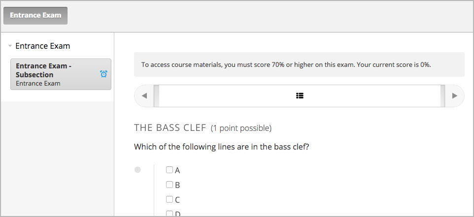
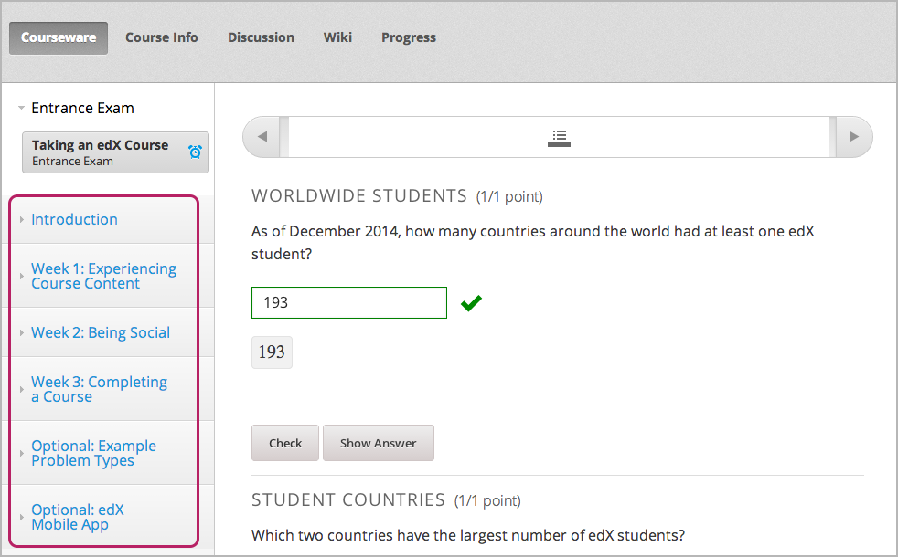

3.4. 设定入学要求¶
也许您想要确保学生在上课前有指定的技能和知识基础。
3.4.1. 指定先修课程¶
您可以要求学生在注册您的课程之前先通过特定的edX课程。 学生将在课程信息页面看到关于课程的入学要求。

如果学生没有完成先修课程，他们就不能注册您的课程，也不能在学生面板中看到您的课程。 但是与其他课程不同，学生面板不提供此课程课件链接。 学生面板包括先修课程信息页面的链接。学生可以在信息页面注册先修课程。

要指定先修课程，您必须是当前课程以及先修课程的作者。
- 在Studio中打开您的课程。
- 在 设置 菜单中选择 日程表和细节 。
- 在 日程表和细节 页面，选择 要求 一栏 。
- 在 先修课程 的下拉列表中选择一门课程。
- 在页面底部选择 保存修改 。
Note
目前您只能选定一门先修课程。
3.4.2. 设置入学考试¶
您可以要求学生在访问您的课程材料之前通过入学考试。 如果课程含有入学考试，注册该课程的学生只能看到 课程更新与新闻 页面和 入学考试 标签， 直到他们通过入学考试。
{kind=link}
学生通过入学考试以后，他们可以访问所有已发布的课程资料。
按照以下步骤设置入学考试。
- 在Studio中打开您的课程。
- 在 设置 菜单中选择 日程表与细节 。
- 在 日程表与细节 页面下滚到 要求 部分。
- 选择 要求学生访问课程资料之前通过入学考试 。
- 在页面底端选择 保存修改 。
保存修改之后，Studio自动在您的课程大纲创建 入学考试 一节。 去课程大纲添加入学考试内容。
3.4.2.1. 入学考试最佳实践¶
我们强烈建议您遵循以下指导步骤帮助您的学生在入学考试中有良好的体验。
确保您的贝塔测试员测试入学考试。
确保您在课程信息页面中说明此课程需要入学考试。 否则学生在注册您的课程并尝试访问课程内容之前不知道需要入学考试。
在 课程更新与新闻 置顶一项声明，声明中包括关于那些学生需要参加考试的信息和指导。 当学生第一次尝试访问课程内容时，他们能看到 课程更新与新闻 页面。 我们建议您在页面中包含以下信息。
学生点击屏幕左侧 入学考试 标签开始考试。
完成入学考试以后，学生必须再次点击 入学考试 标签刷新页面。 页面刷新以后，学生就可以看到所有课程内容了。

{kind=link}
3.4.2.2. 在课程大纲里创建入学考试¶
您将在Studio的课程大纲中创建入学考试。 创建入学考试的步骤与创建其他内容相同。 更多信息请参阅 Creating Course Content.
3.4.2.3. 调整入学考试分数¶
如果您在学生参加入学考试之后发现错误，且必须修改考试内容，您可以通过几个选项为学生重新评分。 这些选项可以在教师面板中设置。
在教师面板中，点击 学生管理 ，滚动至 调整入学考试成绩 一栏。 以下选项可供设置。
- 重置学生尝试次数 : 为特定学生重置尝试次数为0，学生可以从头开始答题。 更多信息请参考 学生答题尝试次数归零.
- 为学生提交答案重新评分 : 为学生提交的答案重新评分。 更多信息请参考 为学生答题重新计分.
- 删除学生的问题状态 : 从考试数据库中删除学生的所有历史记录。 更多信息请参考 删除学生答题历史数据.
导师面板中的另一个选项是 查看学生后台测试历史。 如果您重置了学生的尝试次数，为学生提交的答案重新评分，或者删除学生的状态， 操作将在后台运行。如果您想查看入学考试中进行的所有操作记录，选择 查看学生后台测试历史 。